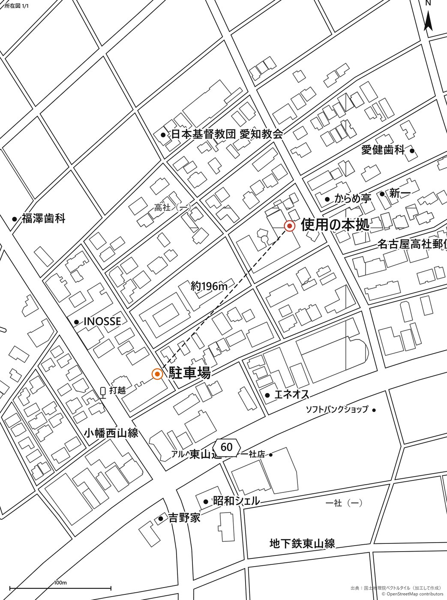
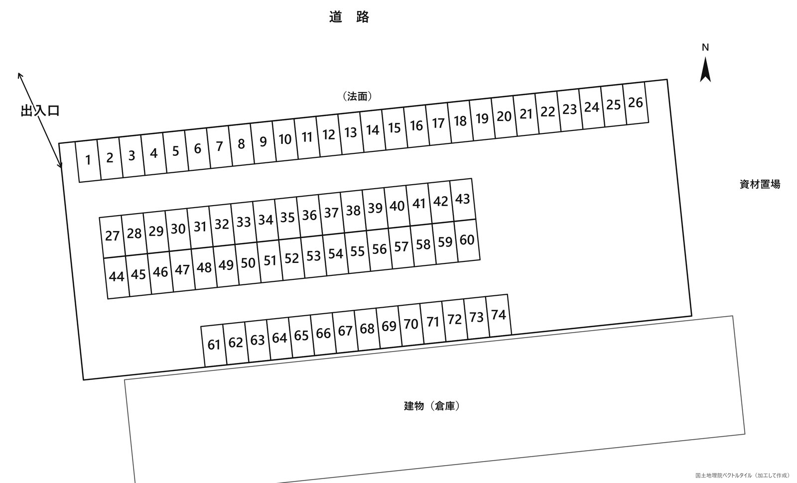
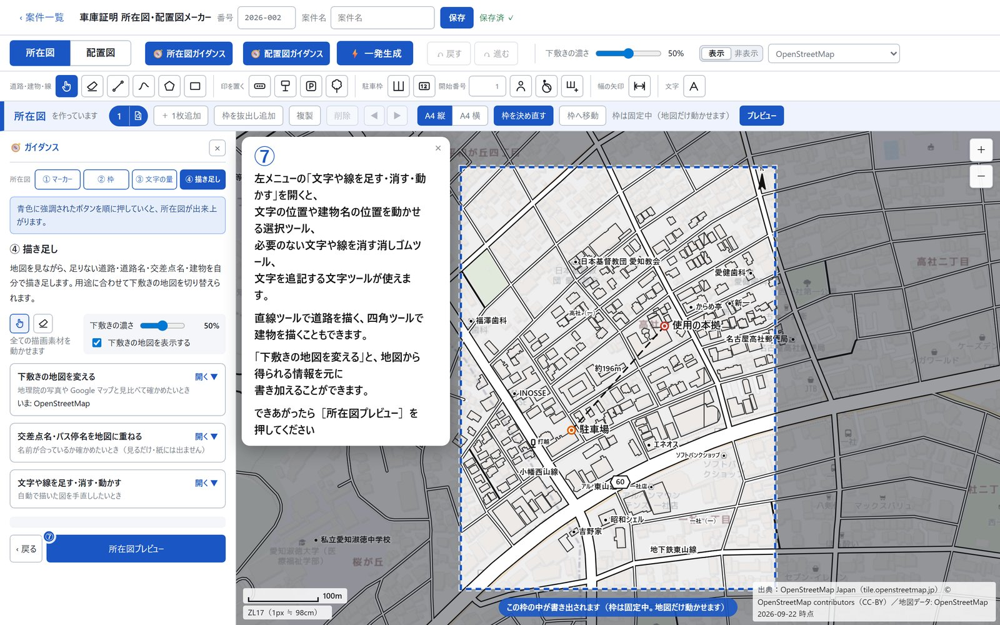

所在図は、住所を入れてボタンを押すだけで自動で出来上がります。配置図は、空から見た写真の上をなぞるだけ。めんどうな作図はさっと終わらせて、本来の業務の時間を取り戻しましょう。
※所要時間は実務での一例です。案件の内容や操作の慣れによって異なります。
道路や建物はもちろん、交差点の名前やお店などの目印まで、地図のデータから図面そのものを自動で描きます。下書きをしたり、地図をなぞったりする必要はありません。

見本：名古屋市名東区。ボタンを押して自動で作ったものを、手を加えずに書き出しています。
駐車場のまわりの道路は自動で描きます。あとは空から見た写真の上で駐車場をなぞって、駐車枠を並べるだけ。広い月極駐車場でも、台数を数えながら1台ずつ描く必要はありません。
空から見た写真を図の下に重ねて表示し、その上から駐車場の形をなぞるだけです。お手持ちの写真や、契約書に付いている区画図を下に敷くこともできます。写真がいつ撮影されたものかも表示するので、古い写真かどうかもすぐに分かります。
駐車枠は、1台ずつではなくまとめて並べられます。見本の74台分の駐車場も、4ステップで枠が揃いました。番号は枠をなぞるだけで、1から順に振られます。
採寸が難しい大通りなどの道路も、地図の縮尺から距離を自動で計測して表示します。測りたい所に矢印を引けば、その長さがそのまま書き込まれます。
※取り込んだ写真や図面の上では、その画像の縮尺で計測されます。実際に測った値を手で入れることもできます。
見本：74台分の駐車場の配置図（アプリから書き出したもの）。
画面の案内どおりに、色の付いたボタンを順番に押していくだけで図面が出来上がります。作図の経験がない方でも、その日から使えます。慣れてきたら案内を閉じて、さらに短い時間で仕上げられます。

ガイダンス画面。次に押すボタンに番号が付き、何をすればよいかが表示されます。
表示はすべて税込価格です（消費税10%を含みます）。
| プラン | 月額 | 月払いで 使える件数 | 年払いの金額 | 年払いで 使える件数 | 同時に使える パソコンの台数 |
|---|---|---|---|---|---|
| お試し | 0円 | 7日間で3件 | — | — | 1台 |
| ライト | 3,300円 | 月10件 | 33,000円 | 年120件 | 1台 |
| スタンダード | 5,800円 | 月50件 | 58,000円 | 年600件 | 2台 |
| プロ | 11,800円 | 月200件 | 118,000円 | 年2,400件 | 3台 |
| 事務所スタンダード | 22,000円 | 月600件 | 220,000円 | 年7,200件 | 5台 |
| 事務所プロ | 38,000円 | 無制限 | 380,000円 | 無制限 | 無制限 |
← 表は横にずらして見られます →
※「1件」は1つの案件のことです。その案件の図面を PDF や画像で書き出した時に1件と数えます。
差し戻しなどで同じ案件を直して書き出し直す場合は、何度でも追加の件数にはなりません。
1つ目は、料金が2か月分お得になることです。年払いの金額は、月額の10か月分です。1年間使っても、10か月分の料金で済みます。
2つ目は、使える件数を「1年間の合計」で数えることです。月払いでは、毎月の上限の件数が決まっています。年払いでは月ごとの上限がなくなり、1年間の合計件数の中であれば、どの月にどれだけ使っても構いません。
たとえば、スタンダード（月50件）の場合
ふだんは月25件ほどでも、入札などで忙しい月に80件の案件が集中することがあります。月払いでは、その月は50件で上限に達し、51件目からは図面を書き出せなくなります。
年払いなら、使える件数は1年間で600件です。忙しい月に80件使っても、ほかの月が少なければ、1年間の合計の中で収まります。件数に波がある事務所ほど、年払いが向いています。
上限の件数について：ご契約の件数を使い切ると、その期間（月払いはその月、年払いはその1年）は新しい案件の図面を書き出せなくなります。件数が足りなくなったときは、その画面からすぐに上のプランや年払いに変更できます。変更すればその場で件数が増え、作業を止めずに続けられます。
日本全国で使えます。所在図は全国どこでも自動で作れますし、配置図の下に敷く空からの写真も全国で表示できます。
Chrome（クローム）または Edge（エッジ）が使える Windows パソコンでお使いください。どちらも Windows パソコンで一般的に使われているインターネット閲覧ソフトです。ソフトをインストールする必要はありません。
マウスで線を引いたり枠を動かしたりする作業があるため、スマートフォンやタブレットには対応していません。
最初に、案件を保存するフォルダをパソコンの中から1つ選んでいただきます。案件は、そのフォルダの中に1件ずつ1つのファイルとして保存されます。
保存されたファイルは、ふつうの Windows のファイルと同じように扱えます。コピーしてバックアップを取ったり、別のフォルダへ移したりすることもできます。保存先には、事務所の NAS（共有ハードディスク）や、クラウドストレージのフォルダを指定することもできます。
ありません。案件の内容は、あなたが選んだフォルダにだけ保存され、外部のサーバーに送られることはありません。
図面は PDF または画像のファイルとして書き出せます。印刷して申請書に添付してお使いください。用紙は A4 の縦・横を選べます。
測りたい所に矢印を引くと、地図の縮尺から長さを自動で計算して書き込みます。
ただし、お手持ちの写真や図面を下に敷いてその上で測った場合は、その画像の縮尺で計算されます。実際に測った値がある場合は、手で入力することもできます。
使えます。プランごとに、同時に使えるパソコンの台数が決まっています。スタンダードは2台、プロは3台、事務所スタンダードは5台、事務所プロは台数の制限がありません。
お申し込み、料金のご相談、ご質問は、下のフォームで受け付けています。